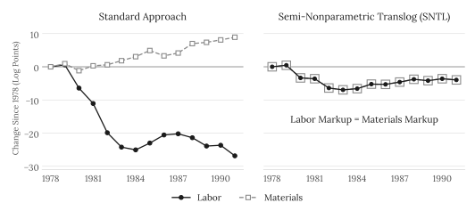

I work in empirical industrial organization and applied econometrics, with interests in environmental and agricultural economics. My current research focuses on estimating production functions to measure markups and technological change, including its bias.
I am on the 2026–27 economics job market. You can find my CV here.
Job Market Paper
Abstract
The production approach estimates markups from output elasticities of flexible inputs and their cost shares in revenue. Recent studies document that markups recovered from different inputs frequently disagree. We show that this conflict arises because standard estimation does not fully exploit the maintained cost-minimization assumption. We develop a semi-nonparametric framework that embeds cost-minimization conditions into estimation, while retaining Hicks-neutral productivity. Markups are invariant across inputs whenever estimation enforces consistency of production function parameters with cost-minimization conditions, whether directly, as here, or via factor-augmenting productivity. We illustrate these findings with manufacturing data from Colombia, Chile, and the United States.
Non-Technical Summary
The production approach estimates firms' markups from their input choices, but the estimates often disagree depending on which input, such as labor or materials, is used. We show that this happens because standard estimation does not fully exploit the maintained assumption of cost minimization, and we develop a method that does, so all inputs give identical markups.
Trends in Markup Estimates from Labor and Materials, Colombia

Working Paper
Abstract
Markups—the ratio of price to marginal cost—are central to evaluating market power and its policy consequences. The production function approach to markup estimation eschews the need to model the demand side and recovers markups as the ratio of a flexible input's output elasticity to its revenue share, under the assumption of firms' cost minimization. Standard production function estimation procedures rest on two key assumptions: technological change is factor-neutral, and inputs are measured without error. This paper develops an econometric framework to estimate production functions with factor-augmenting productivities and to recover markups, with three contributions. First, it fully exploits the maintained assumption of firms' cost minimization—yielding estimates naturally suited for markup measurement without imposing output market structure. Second, it incorporates a general formulation of factor-biasing productivity within a CES production function using capital, labor, and materials. Third, it evaluates how input measurement errors—pervasive in firm-level production data—bias both technology parameters and markups in standard procedures, and develops alternative estimation strategies that substantially improve parameter estimates.